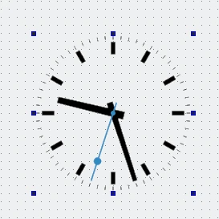

Custom Widget Plugin
Creating a custom widget plugin for Qt Designer.

In this example, the custom widget used is based on the Analog Clock example, and does not provide any custom signals or slots.
Preparation
To provide a custom widget that can be used with Qt Designer, we need to supply a self-contained implementation and provide a plugin interface. In this example, we reuse the Analog Clock example for convenience.
Project files
CMake
The project files need to state that a plugin linking to the Qt Designer libraries is to be built:
find_package(Qt6 REQUIRED COMPONENTS Core Gui UiPlugin Widgets)
qt_add_plugin(customwidgetplugin)
target_link_libraries(customwidgetplugin PUBLIC
Qt::Core
Qt::Gui
Qt::UiPlugin
Qt::Widgets
)
The link libraries list specifies Qt::UiPlugin. This indicates that the plugin uses the abstract interfaces QDesignerCustomWidgetInterface and QDesignerCustomWidgetCollectionInterface only and has no linkage to the Qt Designer libraries. When accessing other interfaces of Qt Designer that have linkage, Designer should be used instead; this ensures that the plugin dynamically links to the Qt Designer libraries and has a run-time dependency on them.
The following example shows how to add the header and source files of the widget:
target_sources(customwidgetplugin PRIVATE
analogclock.cpp analogclock.h
customwidgetplugin.cpp customwidgetplugin.h
)
We provide an implementation of the plugin interface so that Qt Designer can use the custom widget.
It is also important to ensure that the plugin is installed in a location that is searched by Qt Designer. We do this by specifying a target path for the project and adding it to the list of items to install:
set(INSTALL_EXAMPLEDIR "${QT6_INSTALL_PREFIX}/${QT6_INSTALL_PLUGINS}/designer")
install(TARGETS customwidgetplugin
RUNTIME DESTINATION "${INSTALL_EXAMPLEDIR}"
BUNDLE DESTINATION "${INSTALL_EXAMPLEDIR}"
LIBRARY DESTINATION "${INSTALL_EXAMPLEDIR}"
)
The custom widget is created as a library. It will be installed alongside the other Qt Designer plugins when the project is installed (using ninja install or an equivalent installation procedure).
For more information about plugins, see the How to Create Qt Plugins documentation.
qmake
The following example shows how to link a plugin to the Qt Designer libraries:
CONFIG += plugin TEMPLATE = lib QT += widgets uiplugin
The QT variable contains the keyword uiplugin, which is the equivalent of the Qt::UiPlugin library.
The following example shows how to add the header and source files of the widget:
HEADERS = analogclock.h \
customwidgetplugin.h
SOURCES = analogclock.cpp \
customwidgetplugin.cpp
OTHER_FILES += analogclock.json
The following example shows how to install a plugin to the Qt Designer's plugin path:
TARGET = $$qtLibraryTarget($$TARGET) target.path = $$[QT_INSTALL_PLUGINS]/designer INSTALLS += target
AnalogClock Class Definition and Implementation
The AnalogClock class is defined and implemented in exactly the same way as described in the Analog Clock example. Since the class is self-contained, and does not require any external configuration, it can be used without modification as a custom widget in Qt Designer.
AnalogClockPlugin Class Definition
The AnalogClock class is exposed to Qt Designer through the AnalogClockPlugin class. This class inherits from both QObject and the QDesignerCustomWidgetInterface class, and implements an interface defined by QDesignerCustomWidgetInterface.
To ensure that Qt recognizes the widget as a plugin, export relevant information about the widget by adding the Q_PLUGIN_METADATA() macro:
class AnalogClockPlugin : public QObject, public QDesignerCustomWidgetInterface { Q_OBJECT Q_PLUGIN_METADATA(IID "org.qt-project.Qt.QDesignerCustomWidgetInterface") Q_INTERFACES(QDesignerCustomWidgetInterface) public: explicit AnalogClockPlugin(QObject *parent = nullptr); bool isContainer() const override; bool isInitialized() const override; QIcon icon() const override; QString domXml() const override; QString group() const override; QString includeFile() const override; QString name() const override; QString toolTip() const override; QString whatsThis() const override; QWidget *createWidget(QWidget *parent) override; void initialize(QDesignerFormEditorInterface *core) override; private: bool initialized = false; };
The functions provide information about the widget that Qt Designer can use in the widget box. The initialized private member variable is used to record whether the plugin has been initialized by Qt Designer.
Note that the only part of the class definition that is specific to this particular custom widget is the class name.
AnalogClockPlugin Implementation
The class constructor simply calls the QObject base class constructor and sets the initialized variable to false.
AnalogClockPlugin::AnalogClockPlugin(QObject *parent) : QObject(parent) { }
Qt Designer will initialize the plugin when it is required by calling the initialize() function:
void AnalogClockPlugin::initialize(QDesignerFormEditorInterface * /* core */) { if (initialized) return; initialized = true; }
In this example, the initialized private variable is tested, and only set to true if the plugin is not already initialized. Although, this plugin does not require any special code to be executed when it is initialized, we could include such code after the test for initialization.
The isInitialized() function lets Qt Designer know whether the plugin is ready for use:
bool AnalogClockPlugin::isInitialized() const { return initialized; }
Instances of the custom widget are supplied by the createWidget() function. The implementation for the analog clock is straightforward:
QWidget *AnalogClockPlugin::createWidget(QWidget *parent) { return new AnalogClock(parent); }
In this case, the custom widget only requires a parent to be specified. If other arguments need to be supplied to the widget, they can be introduced here.
The following functions provide information for Qt Designer to use to represent the widget in the widget box. The name() function returns the name of class that provides the custom widget:
QString AnalogClockPlugin::name() const { return u"AnalogClock"_s; }
The group() function is used to describe the type of widget that the custom widget belongs to:
QString AnalogClockPlugin::group() const { return u"Display Widgets [Examples]"_s; }
The widget plugin will be placed in a section identified by its group name in Qt Designer's widget box. The icon used to represent the widget in the widget box is returned by the icon() function:
QIcon AnalogClockPlugin::icon() const { return {}; }
In this case, we return a null icon to indicate that we have no icon that can be used to represent the widget.
A tool tip and "What's This?" help can be supplied for the custom widget's entry in the widget box. The toolTip() function should return a short message describing the widget:
QString AnalogClockPlugin::toolTip() const { return {}; }
The whatsThis() function can return a longer description:
QString AnalogClockPlugin::whatsThis() const { return {}; }
The isContainer() function tells Qt Designer whether the widget is supposed to be used as a container for other widgets. If not, Qt Designer will not allow the user to place widgets inside it.
bool AnalogClockPlugin::isContainer() const { return false; }
Most widgets in Qt can contain child widgets, but it only makes sense to use dedicated container widgets for this purpose in Qt Designer. By returning false, we indicate that the custom widget cannot hold other widgets; if we returned true, Qt Designer would allow other widgets to be placed inside the analog clock and a layout to be defined.
The domXml() function provides a way to include default settings for the widget in the standard XML format used by Qt Designer. In this case, we only specify the widget's geometry:
QString AnalogClockPlugin::domXml() const { return uR"( <ui language="c++"> <widget class="AnalogClock" name="analogClock"> )" R"( <property name="geometry"> <rect> <x>0</x> <y>0</y> <width>100</width> <height>100</height> </rect> </property> ") R"( <property name="toolTip"> <string>The current time</string> </property> <property name="whatsThis"> <string>The analog clock widget displays the current time.</string> </property> </widget> </ui> )"_s; }
If the widget provides a reasonable size hint, it is not necessary to define it here. In addition, returning an empty string instead of a <widget> element will tell Qt Designer not to install the widget in the widget box.
To make the analog clock widget usable by applications, we implement the includeFile() function to return the name of the header file containing the custom widget class definition:
QString AnalogClockPlugin::includeFile() const { return u"analogclock.h"_s; }